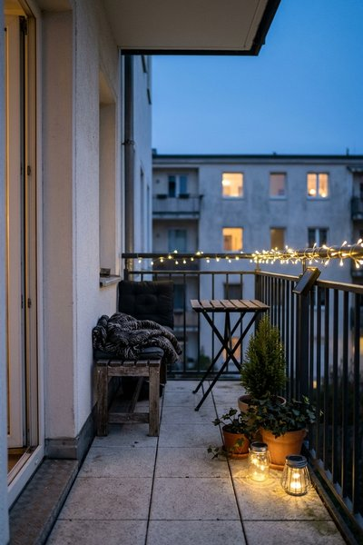
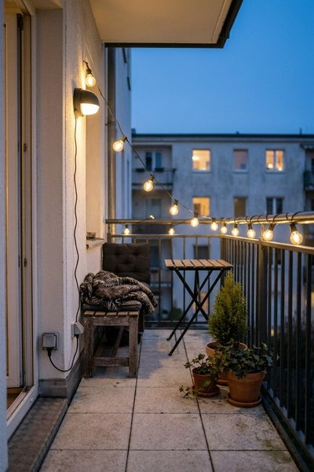
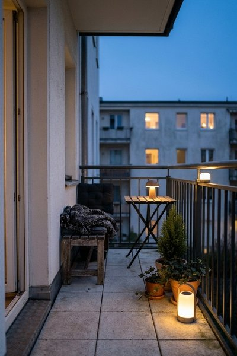

Balkon-Beleuchtung: Solar, Strom oder Akku?
Derselbe Balkon, dreimal anders beleuchtet. Welche Lösung passt, hängt vor allem von zwei Fragen ab: Gibt es eine Außensteckdose? Und wie viel Sonne bekommt der Balkon im Winter?



1. Solar
Lichterketten und Laternen mit kleinem Solarpanel, das tagsüber am Geländer lädt. Kein Kabel, keine Steckdose, kein Strom.
Vorteile: günstig, keine laufenden Kosten, schaltet sich abends von selbst ein.
Nachteile: im Winter und auf Nordbalkonen oft nur 1–3 Stunden Licht, eher schwach. Im Sommer ideal.
ca. 10–30 € pro Lichterkette
2. Strom (Lichterkette mit Stecker)
Lichterkette für außen, meist mit größeren Birnen, an eine Außensteckdose angeschlossen. Am hellsten und zuverlässigsten – mit Zeitschaltuhr geht sie jeden Abend zur gleichen Zeit an.
Vorteile: hell, brennt die ganze Nacht, unabhängig vom Wetter.
Nachteile: braucht eine Außensteckdose. Ein Kabel durch Tür oder Fenster beschädigt die Dichtung und ist eine Stolperfalle.
ca. 20–50 € (plus ca. 10 € Zeitschaltuhr)
3. Akku
Kabellose Tisch- und Laternenlampen, die per USB aufgeladen werden. Sie stehen dort, wo man sitzt, und kommen bei Regen einfach mit rein.
Vorteile: gemütliches Licht auf Sitzhöhe, kein Kabel, auch drinnen nutzbar, oft dimmbar.
Nachteile: muss regelmäßig geladen werden, pro Lampe teurer.
ca. 20–60 € pro Lampe
Vergleich auf einen Blick
| Solar | Strom | Akku | |
|---|---|---|---|
| Kosten | 10–30 € | 20–50 € | 20–60 € je Lampe |
| Helligkeit | schwach | hell | mittel |
| Im Winter | oft nur kurz | zuverlässig | zuverlässig |
| Steckdose nötig | nein | ja | nein (zum Laden drinnen) |
| Aufwand | keiner | keiner (mit Zeitschaltuhr) | regelmäßig laden |
Richtwerte für Deutschland, Stand November 2026. Die Preise schwanken je nach Händler und Saison.
Welche Beleuchtung passt zu dir?
Mit Außensteckdose: Strom – die beste Wahl für den Winter.
Ohne Steckdose, sonniger Balkon: Solar, ergänzt um eine Akku-Lampe für dunkle Wochen.
Ohne Steckdose, Nordbalkon: Akku-Lampen. Mehr Ideen: Lichterketten auf dem Balkon.
Häufige Fragen
Darf ich auf dem Balkon eine Außensteckdose nachrüsten?
Nur vom Elektriker und in der Mietwohnung nur mit Erlaubnis des Vermieters.
Stört die Beleuchtung die Nachbarn?
Warmweißes, nicht zu helles Licht nach unten gerichtet stört kaum. Grelle, blinkende oder bunte Lichter sorgen eher für Ärger – und nach 22 Uhr lieber dimmen oder ausschalten.